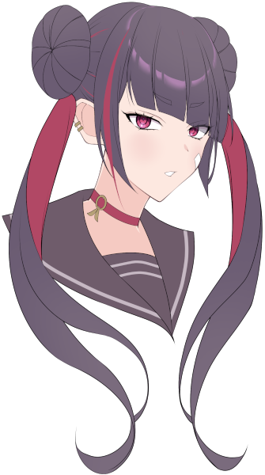
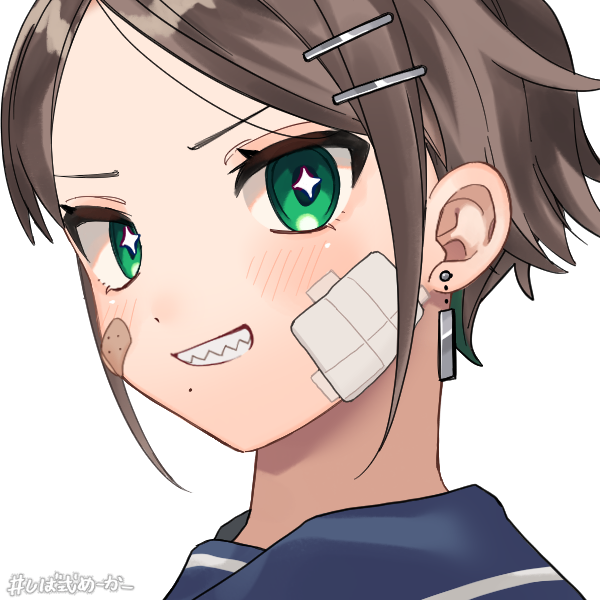

メインログ / 雑談ログ
Character Sheet
PC1：暁月絢音 (キャラシート) PL：めいPC2：猿曳松葉 (キャラシート) PL：タンゴ
PC3：神狩妃華 (キャラシート) PL：がぶらす
PC4：蛇ノ目衣葉 (キャラシート) PL：LISP
Index
◆Information◆ステージ：奈良県梅結村
NPC紹介
◆Pre play◆
HO&PC紹介
◆Opening Phase◆
01
第1回目開始ポイント
Information
ステージ：奈良県梅結村
基本ステージ奈良県梅結村を舞台とする。くわしくは、以下の情報を参照すること。
◆奈良県梅結村
奈良県の南端、山間部に位置する村落。その地名の通り、梅が特産品。
関西弁に似た”梅結弁”を話すが、最近は標準語で話している人も多い。
村は平和そのもので、オーヴァードとの衝突は一度も起こっていない。
大きな催しは、年越しの『正月枝舞』と共に打ちあげる花火くらいか。
細い海苔で飾り結びをした「梅結おむすび」が写真映えして人気だが、
見た目以外、ごく普通の梅おにぎりなので、地元民は誰も口にしない。
ちなみに夢皓支部長は、梅肉ソースをおもちにつけて食べるのが好み。
(好きが高じて、学校の屋上でお餅を焼いて怒られたという伝説を持つ)
◆梅結高校
暁月絢音、猿曳松葉、夢皓有栖、安黒うさぎが通っている高校。
歴史ある木造校舎が特徴で、校長はなにかと「古き良き」を持ち出す。
冷暖房設備がないため、夏は暑く、冬は寒い。
在校生徒は「古くていいからエアコンくらいつけろ」と抗議している。
なお、男子の制服は学ラン。女子の制服はセーラー服。
◆梅結神社
『年神さま』を祀る、歴史ある神社。
『紅の巫』の『正月枝舞』が有名。
また『門松』の語源とされる全長30mの神木が聳えている。
年末年始は非常に忙しく、初詣に来た参拝客達が殺到する。
◆UGN梅結村支部
三年前に新設された小さな支部。
梅結神社の社務所を使っている。
所属しているのは、暁月絢音、猿曳松葉、夢皓有栖、安黒うさぎ、桐生緋依の計5名。
梅結村自体が平和であるため、これといった任務は無い。ほとんど部活感覚。
お仕事がないときは、巫女の恰好に着替えて、梅結神社の手伝いをしている。
(なお安黒うさぎは、巫女の仕事を拒否している)
◆年神
梅結神社で祀っている神様。
この現代日本において、最も広く信仰されている神の一柱。
すっかり形骸化しているが、正月の行事は全て、この神を迎えるためのもの。
NPC紹介
※ステータス評価※[S]隔絶(戦闘能力では、プライメイトオーヴァード等が該当)
[A]卓越(戦闘能力では、マスターエージェント等が該当)
[B]優秀(戦闘能力では、支部のエースクラス等が該当)
[C]オーヴァード標準
[D]一般人並
[＋/－]以上/未満

“デイドリーム”夢皓 有栖
[シンドローム]不明
[運動能力]D- [戦闘能力]D-
[思考能力]B [戦術指揮]S
「ふふ、お姉ちゃんは何でも知っているのですよ」
暁月絢音のお姉ちゃんを自称するUGN梅結村支部長。
器用に見えて不器用。大和撫子に見えて不良生徒。
学校では授業をサボって昼寝しているコトが多い。
絢音の自由を奪う神社の因習に嫌悪を抱いており、
みんなと”普通の日常”を過ごすコトを望んでいた。
実際、絢音や松葉にとって日常の象徴だったが……

“ヴォーパルバニー”安黒 うさぎ
[シンドローム]ブラックドッグ/サラマンダー
[運動能力]A- [戦闘能力]A-
[思考能力]D- [戦術指揮]C
「そんなんじゃ、いつまでたっても半人前よ」
暁月絢音と猿曳松葉の戦闘の師匠にあたる、UGNエージェント。
愛称は『クロウサ』。キツめの性格だが、面倒見はいい。
単独で支部ひとつに相当する戦闘能力を持っているとか。
なお皆にバレないようにしているが、学力はかなり低い。
“エンプレスツリー”桐生 緋依
[シンドローム]ソラリス/オルクス
[運動能力]D+ [戦闘能力]D+
[思考能力]C+ [戦術指揮]C+
「夢皓支部長……わたしは……」
神狩妃華のおっとりした旧友。UGN梅結村支部の臨時支部長。
かつてはUGNホワイトハンドで医者として活動していた。
FHに傷付けられた人々を救う事ができなかった経験から、
ひとりの犠牲も出さず、梅結村支部を率いる夢皓支部長を慕っていた。
なおカンタンな回復と幻覚のエフェクトを使えるが、戦闘能力はない。
妃華と交換したブローチをいつも大事に身に着けている。
“ワンダーアキュート”河合 由佳
[シンドローム]ブラックドッグ/モルフェウス
[運動能力]D [戦闘能力]D
[思考能力]B- [戦術指揮]B-
「かわゆいか？ 河合由佳カワイユイカ！ ただいま参上っす！！」
神狩妃華の後輩。UGN本部から同行してきたノリの軽い新人オペレーター。
レネゲイド知識が豊富で状況把握能力が高いが、戦闘能力は一般人並。
そのおかげか、市民感情や現場意見を重視している模様。
“ジャバウォック”
[シンドローム]ウロボロス/ブラム=ストーカー
[運動能力]B [戦闘能力]B～A
[思考能力]B [戦術指揮]B
「あっしは金勘定ばかり得意な、しがない傭兵ですぜい」
UGN梅結村支部の一大事に雇われた傭兵。
金さえ貰えれば何でもすると嘯いており、
どことなく軽薄な空気を持つ細身の大男。
“プランナー”都築京香
[シンドローム]不明
[運動能力]不明 [戦闘能力]不明
[思考能力]不明 [戦術指揮]不明
「プランは第一段階の成功を確認。さあ、次のステップに移りましょう」
蛇ノ目衣葉を梅結村に導いた、ゼノスのリーダー。
表向きはUGNに協力する姿勢を示しながら、やっぱり裏はあるようで？
Pre play
HO&PC紹介
◆PC1用ハンドアウト◆
ロイス：夢皓有栖
カヴァー/ワークス：巫女/指定なし
あなたは『正月枝舞』という神楽のために、
その生涯を捧げる『紅の巫』と呼ばれる巫女だ。
お役目のために、幼い頃から独りで過ごしてきたが、
今から三年前、UGN支部長の「夢皓有栖」と出会い、
また彼女が連れてきたPC②や「安黒うさぎ」といった友人もできたことで、
あなたの日常は、遅咲きながら確かに花開いていた。
だが、紅の巫としての修行が忙しくなる時期、クリスマスパーティーの翌日。
あなたは、ある絶望的報せを聞くことになる。
※このハンドアウトを選んだPCは「Dロイス：遺産継承者:紅梅」を取得する。
◆PC1専用アイテム◆
『紅梅』
種別：白兵 技能：<白兵> 命中：-1 攻撃力：12 ガード値：1 射程：至近
購入/常備化：購入不可/不可
解説:古き神を封じたとされる、EXレネゲイドの木刀。
巫の血を宿した人間のみ、契約を行なう事ができる。
『正月枝舞』を舞う際、これは祭具として振るわれる。
臨戦状態に入った時、バロール/オルクスの力によって、
契約した対象のレネゲイドを纏い、自ら刀身を作り出す機能を持つ。
(例:契約した人間がブラックドッグの場合、雷の刃が作りだされる。)
この武器による攻撃で1点でもダメージを与えた場合、
対象が使用して効果が持続しているEロイスひとつを解除できる。
ただし、GMが許可しない限り解除はできない。
代償:契約者は梅結市から外に出ることが出来ない。侵蝕率基本値に+4する

◆PC2用ハンドアウト◆
ロイス：安黒うさぎ
カヴァー/ワークス：指定なし/UGNチルドレン
あなたは過去、FHに家族を奪われたことがあるUGNチルドレンだ。
身寄りをなくしたあなたは、UGN支部長の「夢皓有栖」に拾われ、
戦闘の師匠「安黒うさぎ」とPC①の四人で、新たな生活を始めた。
それから三年。12月25日。雪が降りしきる運命の夜。
仮初の家族は再び、あなたの目の前から消えてしまうことになる。
◆PC3用ハンドアウト◆
ロイス：桐生緋依
カヴァー/ワークス：UGN本部エージェント/指定なし
あなたは中立派か穏健派のUGN本部エージェントだ。
UGN本部技術顧問「アスクレピオス」の依頼を受け、
あなたは後輩の「河合由佳」と共に梅結村を訪れた。
曰く、この村のどこかには”大量破壊兵器”のようなものが眠っており、
穏健派と改革派の間で、陰謀が渦巻いているらしい。
だが、そんなことは関係ない。
旧友の臨時支部長「桐生緋依」と協力し、依頼を完璧にこなすだけだ。
◆PC4用ハンドアウト◆
ロイス：ふしぎな白猫
カヴァー/ワークス：指定なし/ゼノスレネゲイドビーイング
あなたはゼノスに所属するレネゲイドビーイングだ。
「都築京香」から指令を受け、UGNに協力するために梅結村を訪れた。
進化に必要と言っていたが、彼女の真意ははたして……
それはそれとして、UGN梅結村支部はどこだろうか？
迷子のあなたを導いたのは、どこからか姿を現した「白い猫」だった。
Main play
Scene01
場所
To Be Continued...